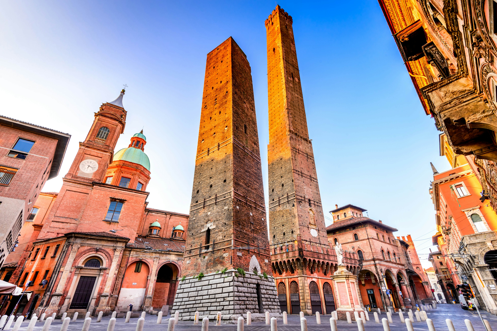

Încrustat în inima regiunii Emilia-Romagna din nordul Italiei, Bolognia este un oraș înmuiat în istorie, cultură și gastronomie. Reputat pentru arhitectura sa medievală, universitatea sa prestigioasă și bucătăria sa excepțională, Bolognia oferă vizitatorilor o bogată varietate de experiențe.
Istoria Bolognei se întinde pe parcursul a peste două milenii, făcându-l unul dintre cele mai vechi și mai fascinante orașe din Italia.

În Evul Mediu, Bolognia a devenit un oraș-stat puternic guvernat de un sistem de bresle și familii aristocratice. Centrul său istoric, caracterizat de străzi înguste de piatră cubică, turnuri medievale și arcade acoperite, este unul dintre cele mai bine conservate din Europa.
Universitatea prestigioasă din Bolognia, fondată în 1088, este cea mai veche din lumea occidentală și a jucat un rol esențial în conturarea peisajului intelectual și cultural al orașului. A atras savanți și studenți din întreaga Europă în timpul Renașterii, câștigând pentru Bolognia porecla "La Dotta" (Cea Învățată).
Bolognia este locul de origine al unor dintre cele mai iconice preparate italiene, inclusiv tagliatelle al ragù (paste cu sos de carne), tortellini in brodo (tortellini în supă) și lasagna alla bolognese (lasagna în stil bolognez). Câmpiile fertile ale Emilia-Romagna produc o abundanță de ingrediente de înaltă calitate, de la brânza Parmigiano Reggiano la prosciutto di Parma, care formează baza bucătăriei bologneze.